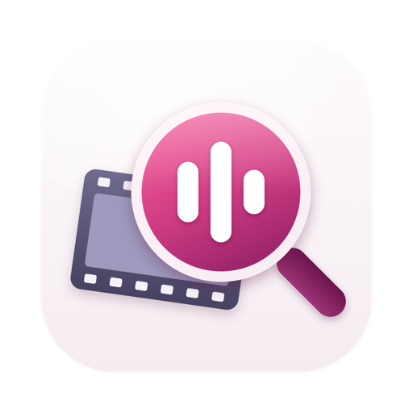
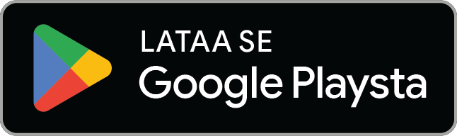
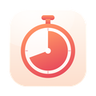

Probette
Kaikki tekninen mediatiedostosta, sanoin.

Tulossa pianMitä se tekee
Probette on mediatarkastaja. Avaa video-, ääni- tai kuvatiedosto, niin ensimmäinen rivi kertoo, mikä se on, sanoin, jotka luet yhdellä silmäyksellä:
4K HDR10 HEVC · 23.976 fps · 5.1 E-AC-3 Atmos · 2 h 03 m · 12.4 GB
- Yhteenveto ensin. Merkit 4K:lle, HDR10:lle, HDR10+:lle, HLG:lle, Dolby Visionille, Atmosille, 10-bittisyydelle ja muulle; kesto, koko ja kokonaisbittinopeus; ja jokainen raakakenttä yhden klikkauksen tai napautuksen päässä.
- Jokainen raita. Video (koodekki, profiili ja taso, koko, kuvataajuus, bittisyvyys, kroma, väri, masterointinäyttö ja valotasot, Dolby Vision ‑profiili), ääni (kanavat ja asettelu, näytteenottotaajuus, bittisyvyys, bittinopeus, kieli), tekstitykset, luvut ja liitteet.
- Metatiedot. Tagit, kansikuva, luvut ja kuvien EXIF, GPS vain numeroina: kartta tarvitsisi internetin.
- Vertaa ja vie. Kaksi tiedostoa rinnakkain erot korostettuina; kopioi yhteenveto tai vie se tekstinä, JSONina tai CSV:nä; koko kansio yhteen taulukkoon, vietynä CSV:nä.
- Siellä missä olet. Macissa Pikakatselu-esikatselu Finderissa (paina välilyöntiä video- tai äänitiedoston kohdalla) ja Avaa sovelluksella; iPhonessa ja iPadissa Tiedostot-appi ja Jaa ▸ Probette Info; Androidilla Avaa sovelluksessa ja Jaa mistä tahansa apista.
Muodot
MP4, MOV, M4A, M4V, 3GP ja fragmentoitu MP4; Matroska ja WebM; MPEG-TS ja M2TS; AVI; MP3, FLAC, Ogg Vorbis ja Opus, WAV, RF64, BW64, AIFF, CAF, AAC, AC-3, E-AC-3 ja DTS; JPEG, HEIC, AVIF, PNG, APNG, GIF, WebP, TIFF, DNG ja BMP. Probette lukee jokaisen tiedoston itse, joten tiedot ovat tarkkoja ja samoja joka laitteella, eikä se koskaan muuta tiedostojasi.
Vaatii macOS 14 Sonoman tai uudemman; iPhonessa ja iPadissa iOS:n ja iPadOS:n 17 tai uudemman; Androidilla Android 8.0:n tai uudemman. Yksi osto kattaa Macin, iPhonen ja iPadin; Android-version saa Google Playsta.
Tietosuoja yhdessä kappaleessa
Probette ei koskaan muodosta yhteyttä internetiin. Avaamasi tiedostot pysyvät laitteellasi. Ei tiliä, ei seurantaa eikä analytiikkaa, eikä mitään tietoja kerätä. Koko tietosuojakäytäntö sanoo saman laajemmin.
Lisää appeja samalta tekijältä
Pieniä appeja, joista jokainen tekee yhden asian hyvin. Ei tilejä, ei mainoksia, eikä mikään niistä seuraa sinua.
 StatuetteCPU, muisti, levy ja verkko valikkorivillä.Mac
StatuetteCPU, muisti, levy ja verkko valikkorivillä.Mac
TocketteAjastin yhden vedon päässä valikkorivistä.Mac ZonetteKaikki tärkeät aikavyöhykkeet yhden klikkauksen päässä.MaciPhone ja iPadAndroid
ZonetteKaikki tärkeät aikavyöhykkeet yhden klikkauksen päässä.MaciPhone ja iPadAndroid LunetteKuu ja Aurinko yhdellä silmäyksellä.MaciPhone ja iPadAndroid
LunetteKuu ja Aurinko yhdellä silmäyksellä.MaciPhone ja iPadAndroid- LunaretteKuukalenteri neljässä perinteessä.MaciPhone ja iPadAndroid
 PausetteLempeitä taukoja silmille ja selälle.Mac
PausetteLempeitä taukoja silmille ja selälle.Mac PoisetteIstu suorassa – AirPodsit muistuttavat.MaciPhone ja iPad
PoisetteIstu suorassa – AirPodsit muistuttavat.MaciPhone ja iPad HushetteRauhallisia taustaääniä, jotka eivät koskaan toistu.MaciPhone ja iPadAndroid
HushetteRauhallisia taustaääniä, jotka eivät koskaan toistu.MaciPhone ja iPadAndroid TapsodyMekaanisen näppäimistön ääniä kirjoittaessasi.Mac
TapsodyMekaanisen näppäimistön ääniä kirjoittaessasi.Mac ThrumlineSykkeesi reaaliajassa valikkorivillä.Mac
ThrumlineSykkeesi reaaliajassa valikkorivillä.Mac NightjarPitää Macin hereillä. Rehellisesti.Mac
NightjarPitää Macin hereillä. Rehellisesti.Mac UmbretteHimmentää kaiken paitsi ikkunan, jossa työskentelet.Mac
UmbretteHimmentää kaiken paitsi ikkunan, jossa työskentelet.Mac PrompetteTeleprompteri suoraan kameran alla.MaciPhone ja iPadAndroid
PrompetteTeleprompteri suoraan kameran alla.MaciPhone ja iPadAndroid TallettePaperinauha laskuillesi.MaciPhone ja iPadAndroid
TallettePaperinauha laskuillesi.MaciPhone ja iPadAndroid BindetteÄänitiedostoista yksi kunnon äänikirja.MaciPhone ja iPadAndroid
BindetteÄänitiedostoista yksi kunnon äänikirja.MaciPhone ja iPadAndroid LettretteAvaa winmail.dat- ja .msg-tiedostot sellaisina kuin ne lähetettiin.MaciPhone ja iPad
LettretteAvaa winmail.dat- ja .msg-tiedostot sellaisina kuin ne lähetettiin.MaciPhone ja iPad Nhanh TayLaita neljä vastausta järjestykseen. Nopeasti.iPhone ja iPadAndroid
Nhanh TayLaita neljä vastausta järjestykseen. Nopeasti.iPhone ja iPadAndroid PinetteMuistiinpanot aina näkyvillä.MaciPhone ja iPadAndroid
PinetteMuistiinpanot aina näkyvillä.MaciPhone ja iPadAndroid